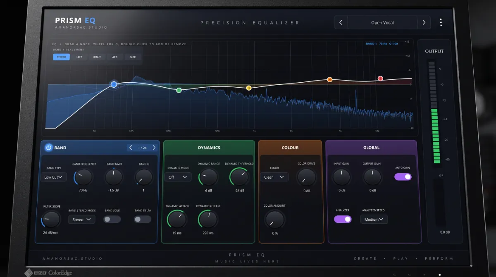
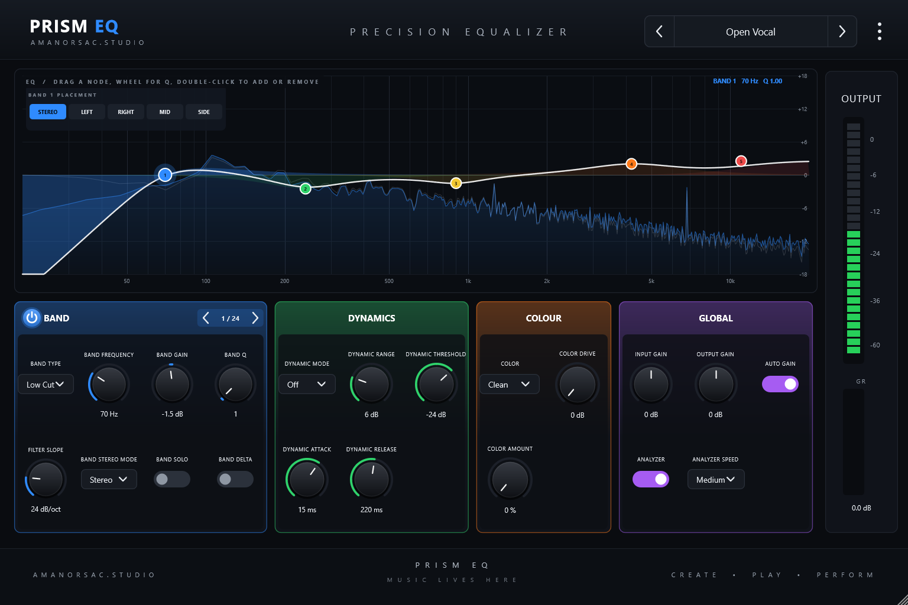
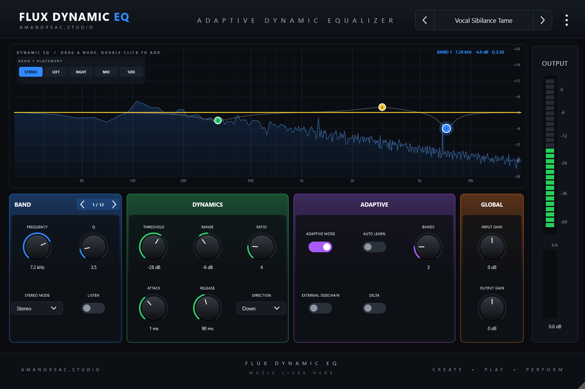
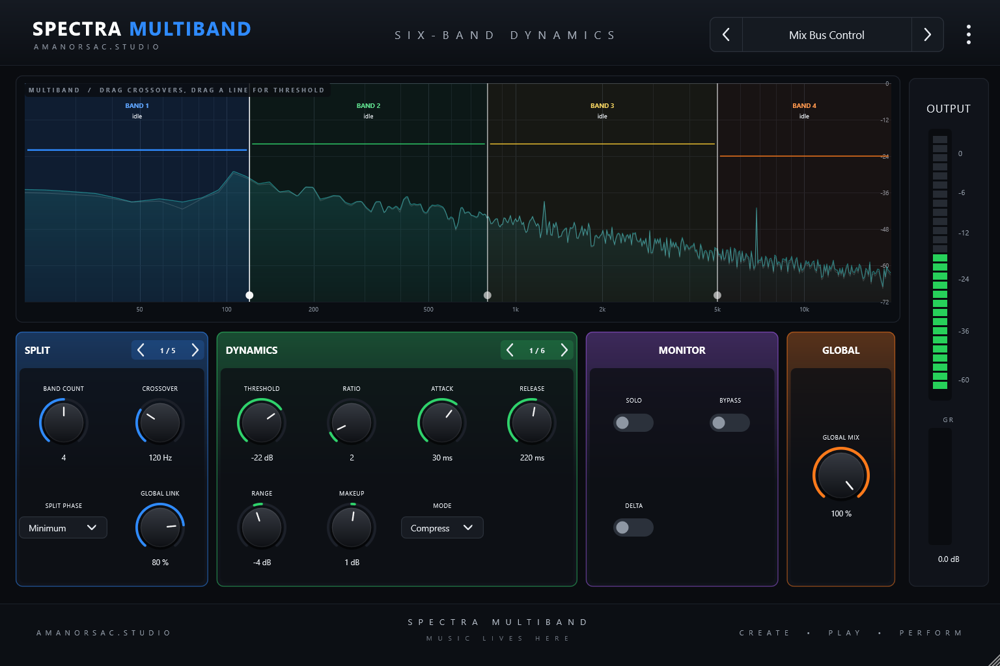
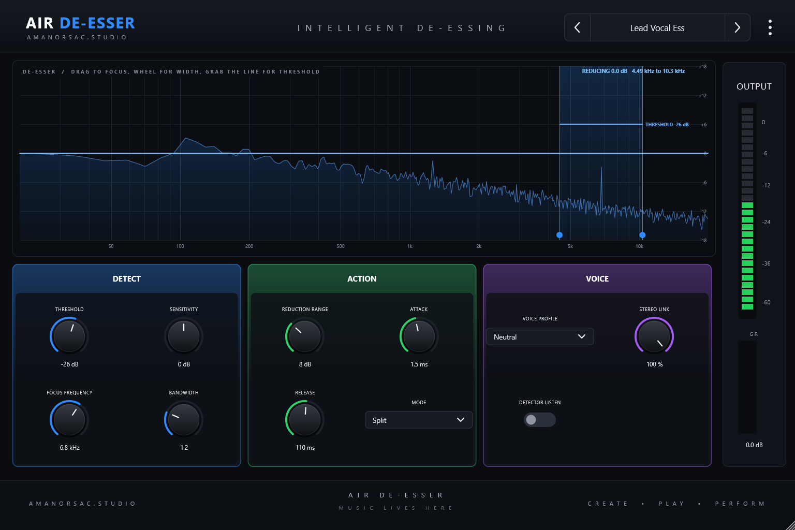
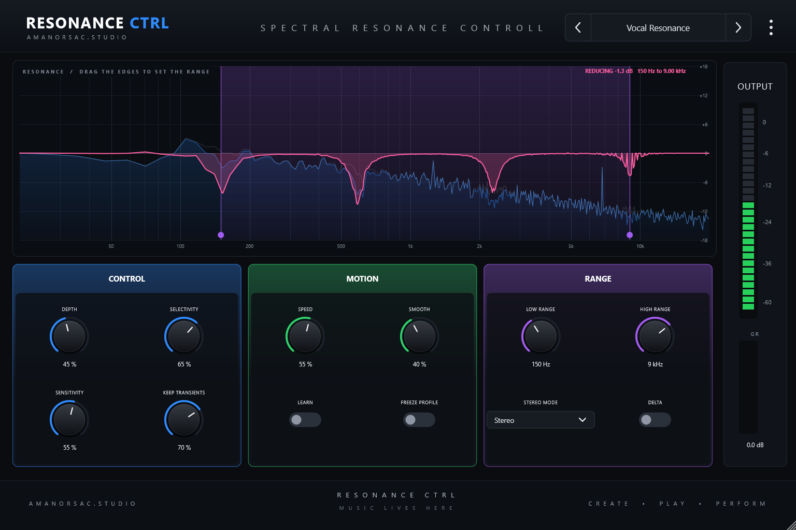
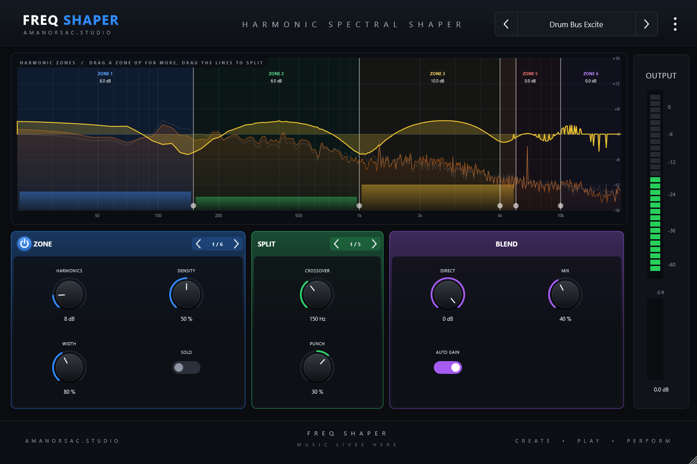
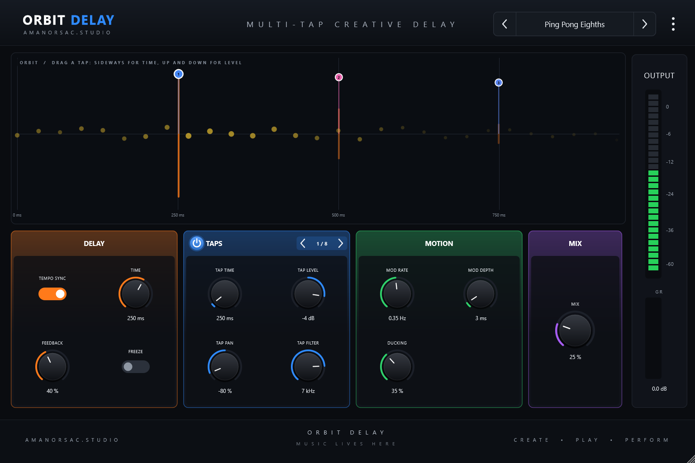
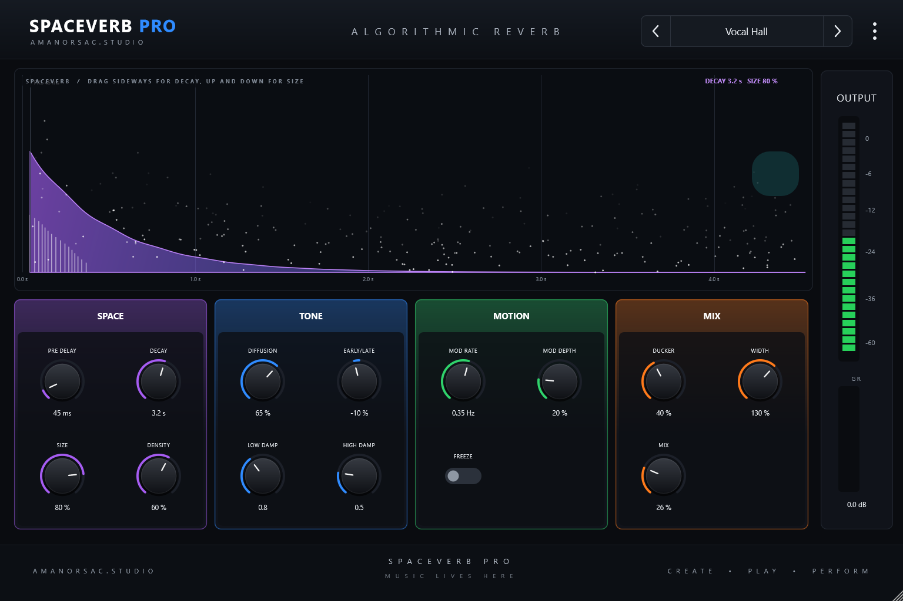
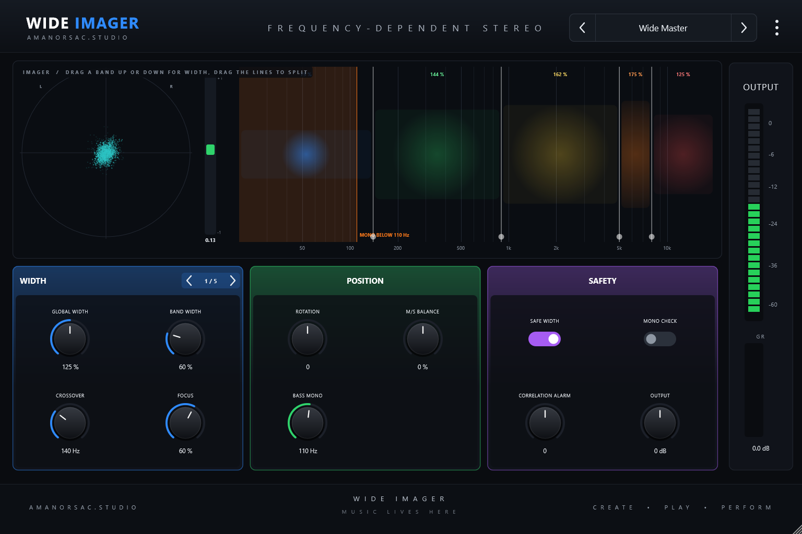

Ten Plug-ins · 120 Presets · VST3, AU and Standalone
AMB Digital
Ten precision tools that show you exactly what they are doing.
Where AMB Analog adds character, AMB Digital gives you control. Every plug-in opens on a live picture of your audio, whether that is the spectrum, the curve, the bands, the echoes or the space, and you grab what you see and move it.
$39 once · one key unlocks all ten · two computers per licence · Windows and macOS

You Should Never Have to Guess
The equalisers draw their curves over the real spectrum, before and after. The dynamics show each band working as the music plays. The de-esser and the resonance controller draw the change they are making, measured from the audio rather than estimated. The delay shows its echoes travelling, the reverb shows its tail decaying and the imager shows your stereo field.
Every picture is also a control. Drag a node, a crossover, a threshold or a delay tap and the panel below follows. Click a band in the picture and the controls switch to that band.

Measured, Not Assumed
Echo timing is accurate to the sample. The reverb's decay control is the real time it takes the tail to fall by 60 dB. Modulation and time changes are tested to be free of clicks, and every factory preset in every plug-in is loaded and run before a build is allowed to ship.
One key unlocks all ten. Type it into whichever plug-in you open first and the whole bundle is licensed on that computer, on two computers per licence, and it keeps working for thirty days without an internet connection.
The Ten
In the order a mix uses them: shape, control, finish, then space and width.

Prism EQ
Precision Equaliser
Up to 24 bands in eight shapes, and every band can live in the stereo image, the middle, the sides, the left or the right. The curve and a coloured shape for each band sit over the live spectrum. Drag a node to move a band, use the wheel for Q, and double-click to add or remove one. Bands can also work dynamically, up or down.

Flux Dynamic EQ
Adaptive Dynamic Equaliser
An equaliser that only acts when the music needs it. Up to twelve bands sit flat until the signal crosses their threshold, then cut or lift by as much as you allow. Adaptive mode follows the program level so a setting keeps working as the performance changes, and it takes an external sidechain.

Spectra Multiband
Six Band Dynamics
Two to six bands of dynamics over the live spectrum. Drag the crossover lines to set the split, drag a band's line to set its threshold, and watch each band's gain change as the music plays. Compress, expand up or expand down in each band, with a minimum or linear-phase split.
Pulse Limiter
True Peak Limiter
A limiter that shows exactly how hard you are hitting it, with a scrolling history of the input in grey, the output in blue and gain reduction in red. The ceiling and threshold are lines you drag. Four styles run from transparent to dense, and a transient control decides how much punch survives.

Air De-Esser
Intelligent De-Essing
Point at the ess and watch it go. Drag the focus band to the sibilance, use the wheel to widen or narrow it, and grab the threshold line to set where it starts working. A curve shows the reduction actually being applied, measured from the audio, with the amount in decibels.

Resonance Ctrl
Spectral Resonance Controller
Takes the ring out and leaves the tone alone. It tames resonances as they appear, inside a range you set by dragging its edges on the spectrum, and draws the change it is making so you can see it is working on the honk and not the body.

Freq Shaper
Harmonic Spectral Shaper
Adds harmonics exactly where a track is missing them. Six zones across the spectrum each have their own harmonics, density and width, so you can put weight into a bass without touching the top, or air onto a vocal without touching the chest.

Orbit Delay
Multi-Tap Creative Delay
A delay you can see travelling. A main echo with feedback plus up to eight taps you place by hand: drag a tap sideways for time and up or down for level. Changing the time while it plays bends the pitch like a tape echo instead of clicking, and ducking clears the echoes while you sing or play.

SpaceVerb Pro
Algorithmic Reverb
Set two seconds and get two seconds. A true stereo reverb with early reflections and diffusion feeding an eight line network, so tails are dense rather than metallic and a mono source comes back wide. Decay runs from a tight room at 0.1 seconds to forty seconds.

Wide Imager
Frequency Dependent Stereo
Wide where it helps and mono where it matters. Five bands of stereo width with a bass mono control underneath, so the top can open out while the low end stays solid. A vectorscope, a correlation meter, a safe width switch and a one-click mono check keep it honest.
Presets Sorted by Source
There are 120 presets across the bundle, twelve in every plug-in, filed under vocals, drums, bass, guitars, keys, strings and horns, the mix bus, the master, creative and utility. They ship inside the plug-in, so there is nothing to install or copy.
Tech Specs
Formats
VST3 and standalone on Windows. VST3, Audio Unit and standalone on macOS.
Platforms
Windows 10 and 11, 64 bit. macOS on Apple silicon and Intel (universal).
Channels
Mono in and out, stereo in and out. External sidechain on Flux Dynamic EQ.
Latency
Zero, except Pulse Limiter's lookahead and Spectra Multiband in linear-phase mode, both reported to the host.
Interface
Resizable from 768 to 1920 pixels wide, fixed aspect.
Presets
120 factory presets, twelve per plug-in, grouped by source. Plain XML .amanorsacpreset files, portable between machines.
Licence
One key unlocks the whole digital bundle. Two computers per licence and 30 days offline. Separate from the AMB Analog key.
macOS Installer
Signed with Developer ID and notarized by Apple.
Windows Installer
Not yet code signed, so SmartScreen warns the first time. Choose More info, then Run anyway.
Questions
How is this different from AMB Analog?
How does one key unlock ten?
Does it need the internet?
Is there an AU version?
AMB Digital
$39
Ten plug-ins and 120 presets, unlocked with one key on two computers. VST3, AU and standalone for Windows and macOS.